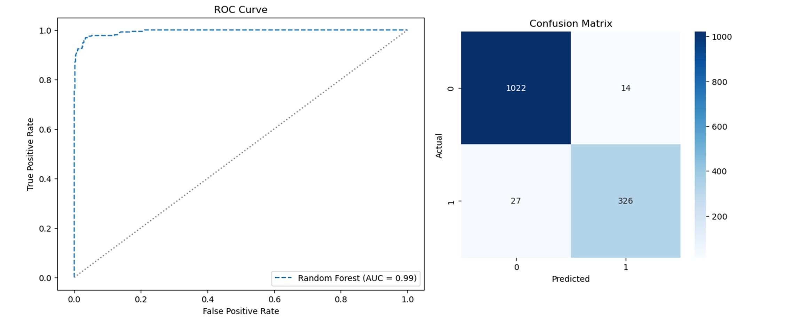
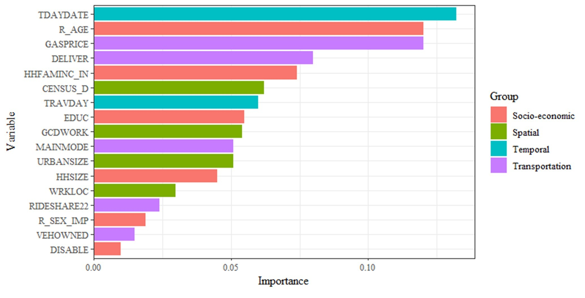
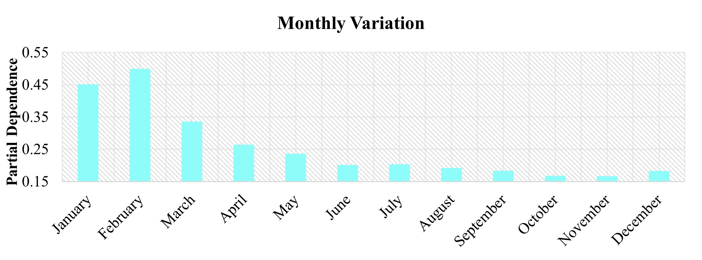
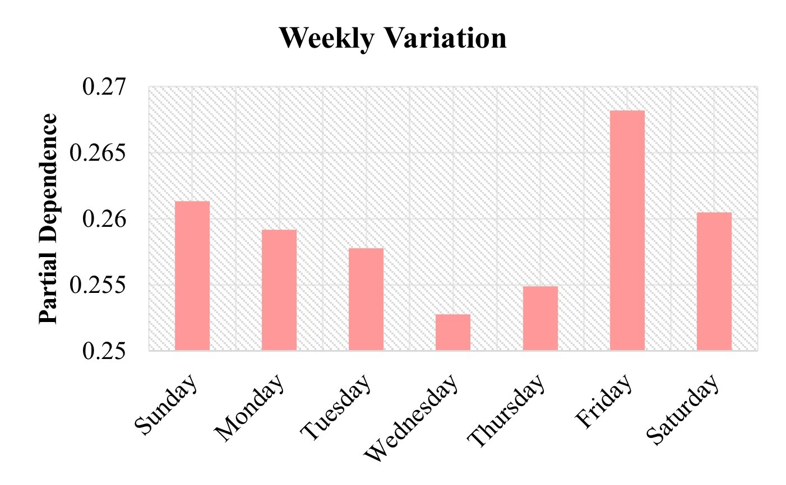
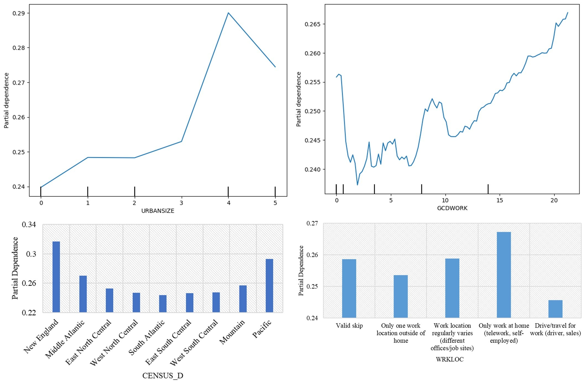
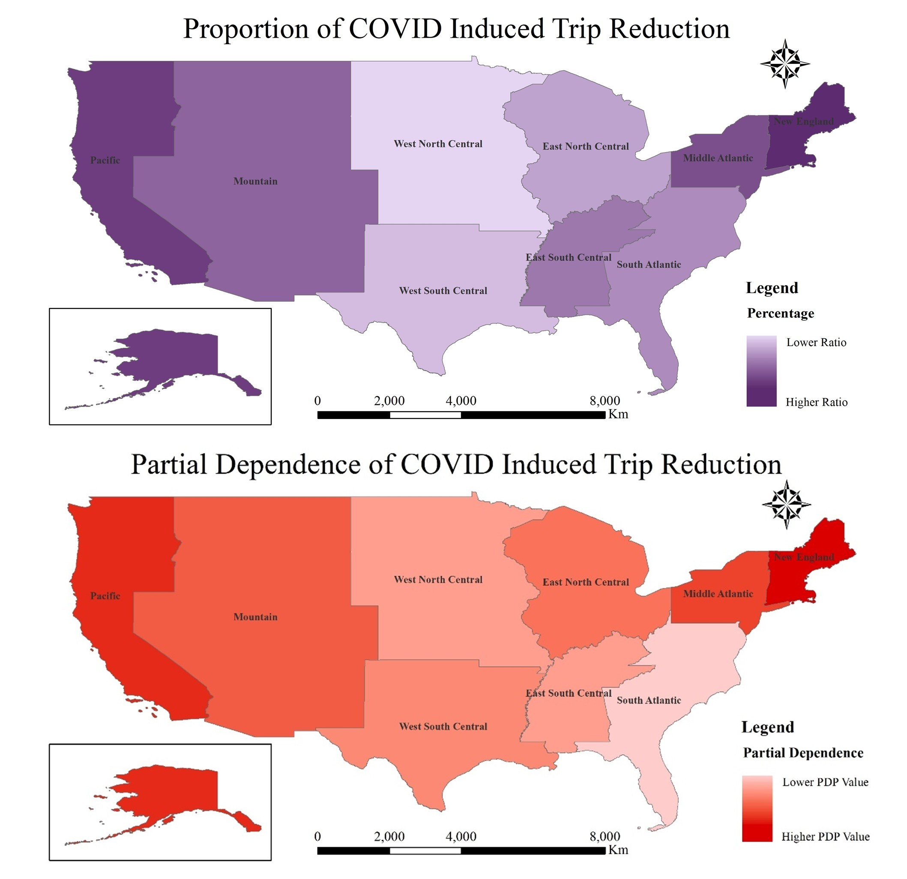
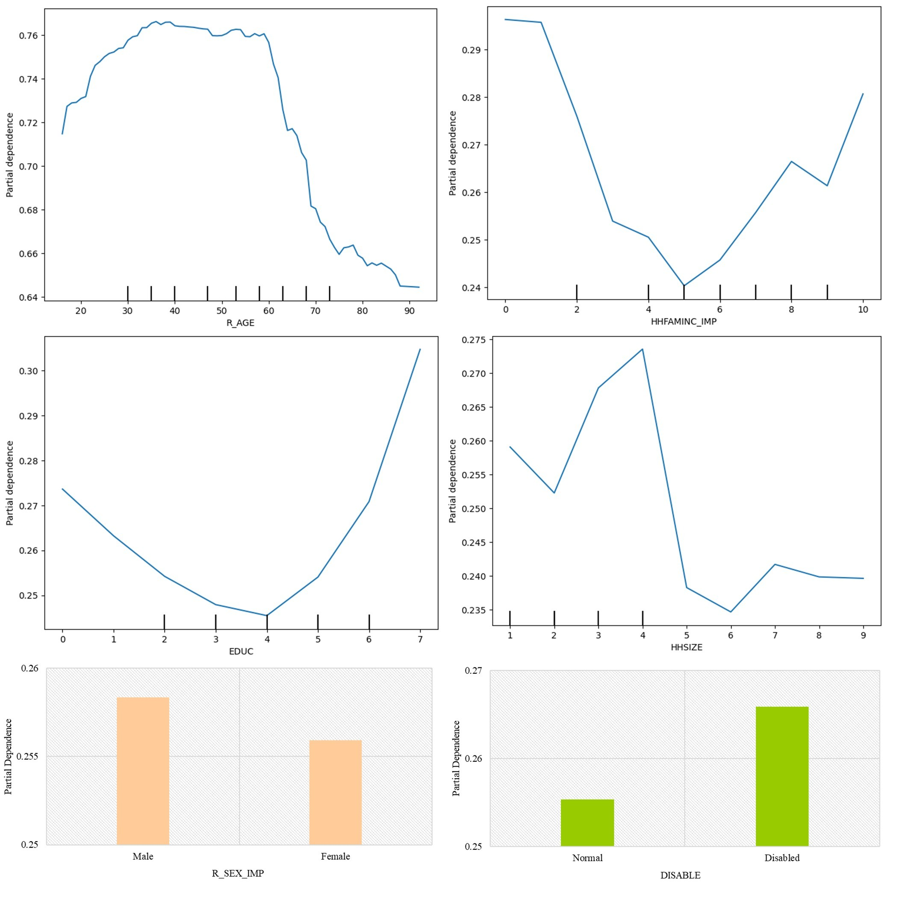
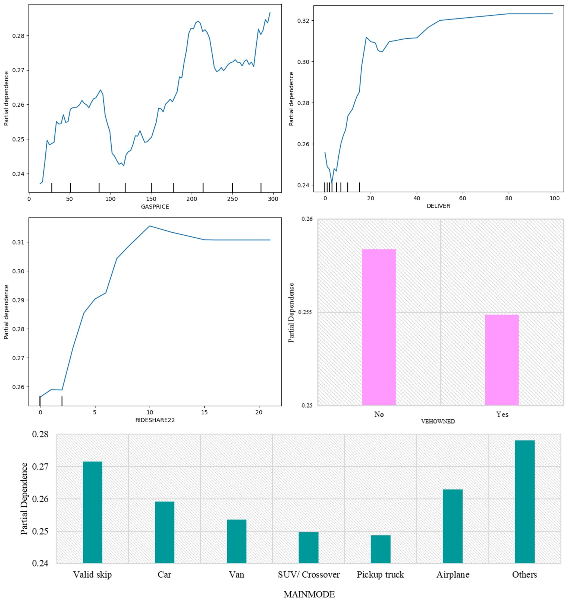

📝
Project: COVID-induced trip reduction behavior in the United States.
Objectives
- To assess how the COVID-19 pandemic influenced trip-making behavior in the United States using the 2022 National Household Travel Survey (NHTS).
- To identify key determinants and interactions (time, location, socio-economic factors, and travel modes) associated with trip reduction using machine learning (Random Forest).
This study investigates how the COVID-19 pandemic affected trip-making behavior in the United States. Using the 2022 National Household Travel Survey (NHTS), the analysis examines how factors such as time, location, income, age, education, and transportation modes relate to trip reduction during the pandemic. Machine learning methods—particularly Random Forest—were used to detect influential variables and their interactions.
Results
Model Performance (Random Forest)
Accuracy (0.9705), Precision (0.9588), Recall (0.9235), F1-score (0.9408)
ROC Curve (AUC) and Confusion Matrix

Variable Importance

Partial Dependence: Monthly Trip Reduction

Partial Dependence: Monthly Trip Reduction

Partial Dependence: Weekly Trip Reduction

Partial Dependence: Spatial Variation

Regional Variation in Trip Reduction

Partial Dependence: Transportation Variation
